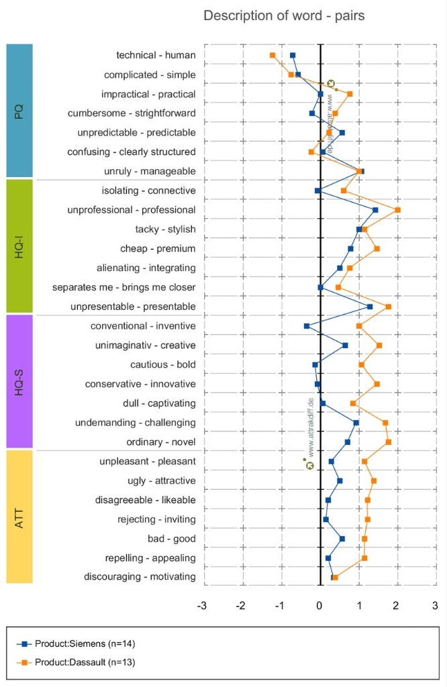
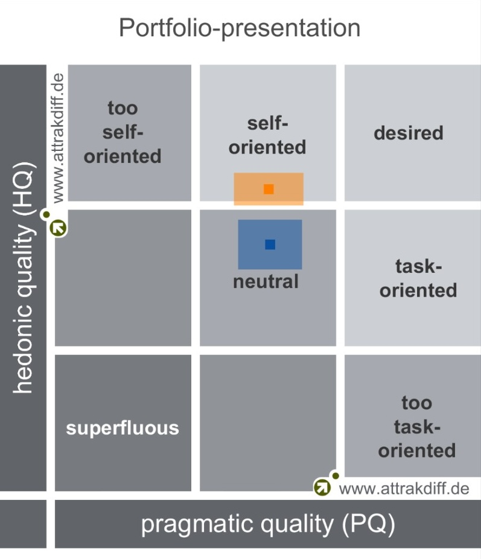

Benchmark 3D design tool solutions for the future of Michelin's engineers teams
Outcome
User acceptance criteria
AttrakDiff methodology
Informed tool choice
Quantitative & qualitative decision support
The company
The R&D division of Michelin counts more than 6 000 engineers and scientists. They have very specific needs and work on tomorrow’s tire technologies.
What was the problem?
On this project my involvement was a benchmark of two products which are aimed at engineers who use 3D design software to design tools for Michelin plants. The goal is to offer the best possible tool for these engineers upon various criteria. I am in charge of the user experience criteria and there is also cost, maintenance and other business criteria entering the final decision. The project was very fast paced due to security and obsolescence issues. The benchmark time itself happened over a one week period during which users from around the world gathered to thoroughly test the two candidates.
The strategy I implemented
I worked in collaboration with the product manager to further detail the content and the agenda of the week. Before the benchmark week I made sure that I was able to do interviews and shadowing to have a good understanding of their current workflows and feedback on the product they used at the time.
Activities
To define what activities I was going to propose to users i used the interviews and shadowing report to search the what test was the most appropriate for my situation. I chose AttrakDiff for two reasons :
- The first is the ability to compare results between two different tools at the time of the test, but also afterward, it will be possible to compare the results of the product at any given time compared to previously.
- The second is the duration and organisation of this test which was simple and short enough to be integrated in the week of various testing that was scheduled.

Challenges
The first challenge I faced was to choose the most adequate test to exploit the data. The second one is the passing of the week itself during which I had to adapt to various technical defects and human unforeseen issues.
Solution
My intervention on this project added quantitative as well as qualitative data to the final decision report. Quantitative via the attrakdiff results and the comparability of the results in time. Qualitative thanks to the interviews and shadowing that I was able to conduct beforehand and during the benchmark week.

Results and metrics
Thanks to the conclusion of the test and the interviews, I helped the Product Manager and Product Owner to make an informed choice regarding the new 3D Design tool. Combined together the business and product team made the final choice based both on financial, technical as well as user experience point of view.
Take-away
I learned to use literature more efficiently, which afterward improved my ability to do research. All the unexpected issues during the week taught me to adapt quickly and to change my agenda depending on the opportunities that I have at any given time.